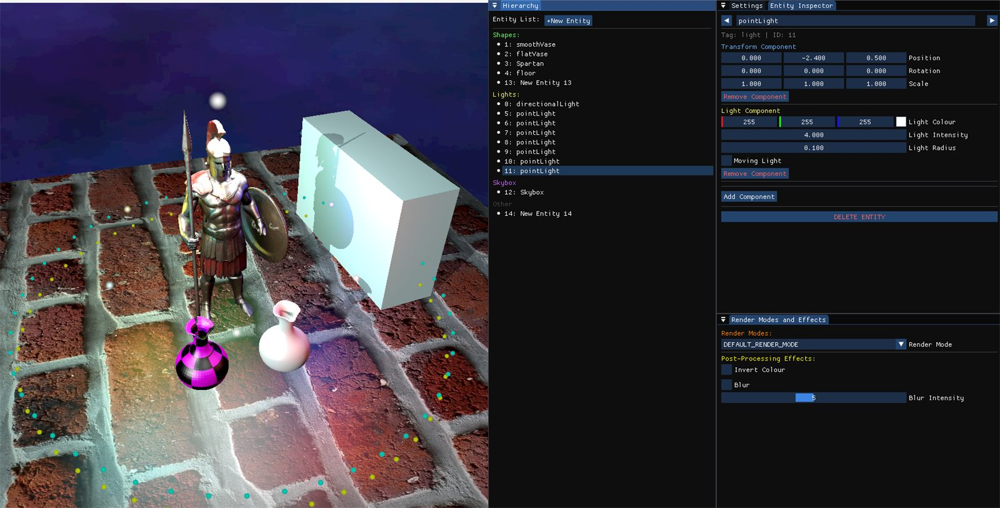
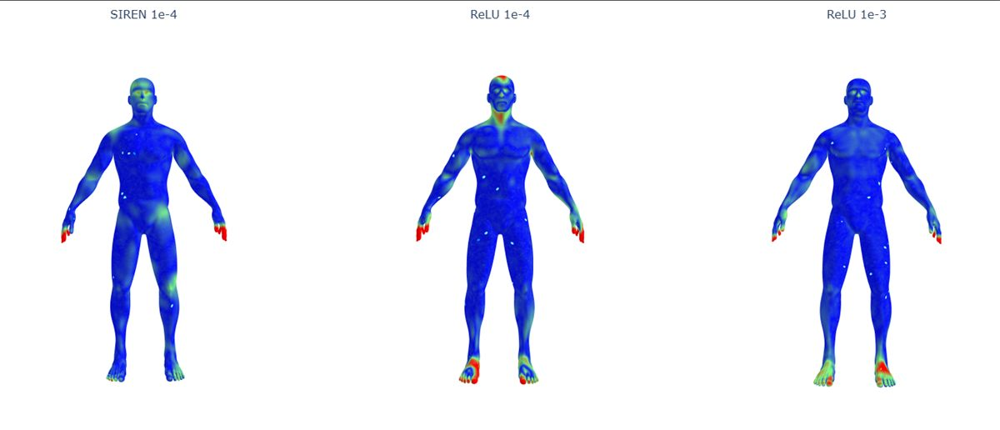
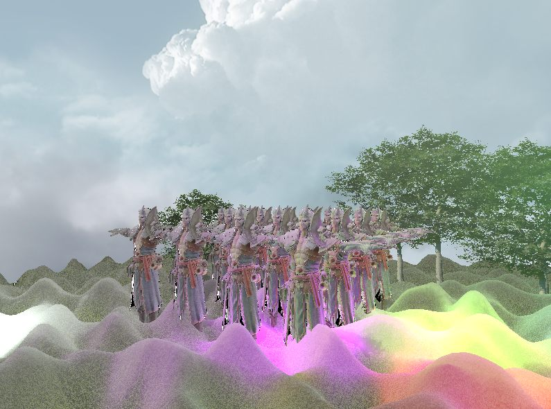
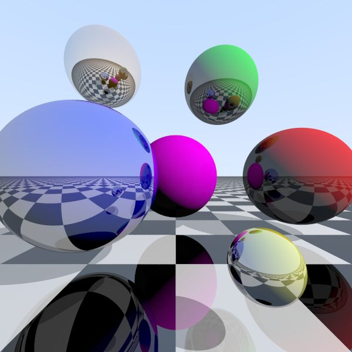
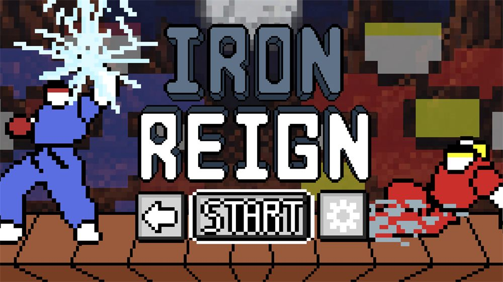
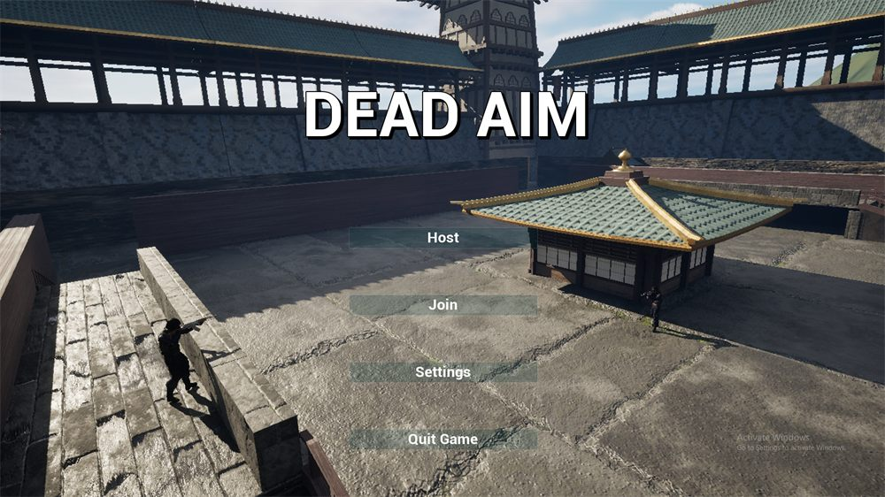
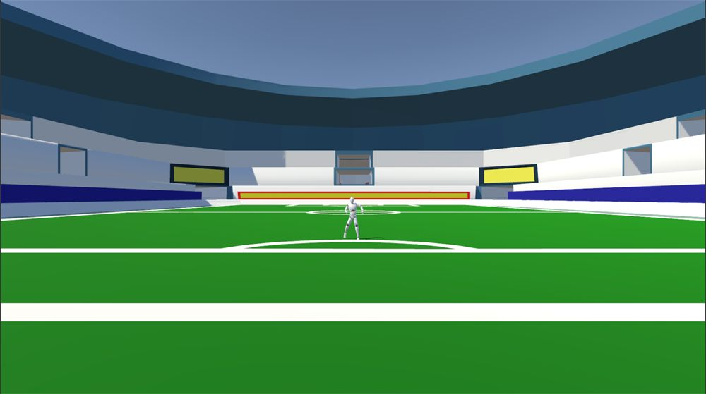
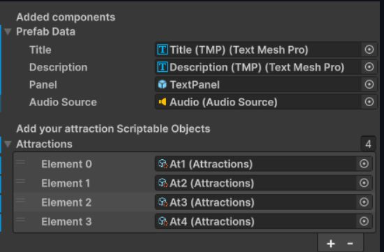
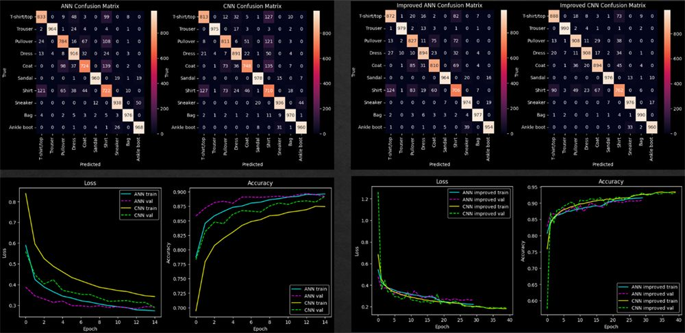
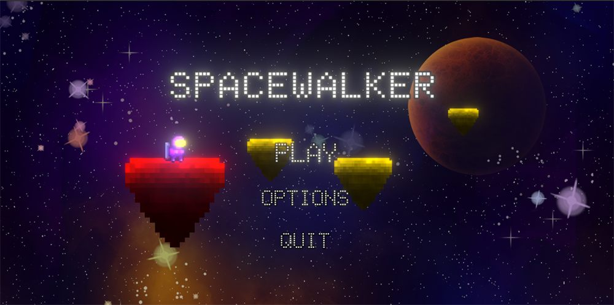

Rendering & research

Vulkan Renderer
A renderer written from scratch on Vulkan 1.3: dynamic rendering, bindless textures, compute post-processing, shadow mapping with PCF, and my own entity component system driven from ImGui.
- Vulkan 1.3
- C++
- GLSL
- ImGui

Best Dissertation AwardNeural SDFs for 3D Mesh Reconstruction
MSc dissertation. A controlled comparison of SIREN and ReLU networks for neural SDF mesh reconstruction, showing where sharp features are lost and how symmetric Chamfer distance can hide it.
- Python
- PyTorch
- Neural SDF
- SIREN

Shader Programming
GLSL shaders inside a C++ OpenGL framework: deferred rendering and lighting, shadow mapping, compute shaders, tessellation and geometry shaders, and post-processing.
- OpenGL
- GLSL
- C++

Ray Tracer
A CPU ray tracer in C++: diffuse lighting with shadows, recursive reflections, a procedural checkered floor, multi-sample anti-aliasing and gamma-corrected output.
- C++
- Ray tracing
Gameplay, AI & tools

Iron Reign · AI for Fighting Games
A 2D fighting game whose CPU opponents use finite state machines, fuzzy state machines and decision trees, including one that learns the player's habits.
- Unity
- C#

Dead Aim
A 1v1 third-person multiplayer shooter over Steam. I built the weapon system, game loop and character.
- Unreal Engine 5
- C++

Blind Goalkeeper Research Template
VR and video versions of a goalkeeper experiment, built to test whether VR training is viable for goalkeepers.
- Unity
- C#
- VR

NPC Guide Tool
Turns any character into a guide NPC driven by a state machine and NavMesh, with routes and attractions configured through scriptable objects.
- Unity
- C#

ANN & CNN for Classification
Baseline and improved ANN and CNN models on Fashion-MNIST, compared on accuracy and training behaviour.
- Python
- Keras

Spacewalker
An endless platformer inspired by Jump King, with procedurally generated platforms instead of a fixed level.
- Unity
- C#
Game mods
Published on the Steam Workshop.
Technical skills
Graphics
- Vulkan
- OpenGL
- GLSL
- Compute shaders
- Shadow mapping
- Deferred rendering
- Tessellation
- Ray tracing
Languages
- C++
- C#
- Python
- GLSL
- Lua
- JavaScript
Engines & ML
- Unity
- Unreal Engine 5
- Neural SDFs
- Keras
- AI behaviour
Tools
- RenderDoc
- CMake
- Git / GitHub
- ImGui
- Profiling
About
Academic background
I graduated in Computer Games Programming from De Montfort University, where I built a foundation in game development, shader programming and rendering, systems programming and AI-driven gameplay, working with OpenGL, Unity and Unreal Engine. I'm now completing a Master's in Artificial Intelligence, and I'm interested in how machine learning can be applied to computer graphics.
Work experience
During my internship with the ITICA team at CYENS I built VR research tools in Unity: interaction design, user input systems, documenting and analysing experiment data, and troubleshooting hardware–software integration.
Future goals
I'm learning Vulkan in depth and exploring the machine learning libraries used in computer graphics. I aim to pursue a PhD in computer graphics with a focus on AI and neural rendering.
- Education
- MSc Artificial IntelligenceDissertation: Neural SDFs for mesh reconstruction
- BSc Computer Games ProgrammingDe Montfort University
- Experience
- Intern, ITICA teamCYENS · VR research tools
- Focus
- Real-time rendering · neural 3D representations
Get in touch
Open to graphics and rendering programmer roles, PhD positions in neural rendering and 3D Gaussian Splatting, as well as industry positions in Game Development.